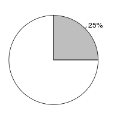
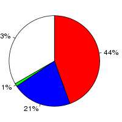

Arabidopsis thaliana (Arabidopsis thaliana, TAIR10) and Musa acuminata (Musa acuminata, MA1) were aligned using the LastZ alignment algorithm (LastZ) in Ensembl release 76. Arabidopsis thaliana was used as the reference species. After running LastZ, the raw LastZ alignment blocks are chained according to their location in both genomes. During the final netting process, the best sub-chain is chosen in each region on the reference species.
Full list of pairwise alignments| Gap open penalty (O) | 400 |
| Gap extend penalty (E) | 30 |
| HSP threshold (K) | 3000 |
| Threshold for gapped extension (L) | |
| Threshold for alignments between gapped alignment blocks (H) | |
| Masking count (M) | |
| Seed and Transition value (T) | 1 |
| Additional parameters | |
| Scoring matrix (Q) | Default |
Number of alignment blocks: 92219
| Genome coverage(bp) | Coding exon coverage (bp) | |
|---|---|---|
| Arabidopsis thaliana |  |  |
| Covered: 29,873,384 out of 119,667,750 | Matches: 14,782,225 out of 33,462,323 | |
| Uncovered: 89,794,366 out of 119,667,750 | Mis-matches: 7,185,985 out of 33,462,323 | |
| Insertions: 457,614 out of 33,462,323 | ||
| Uncovered: 11,036,499 out of 33,462,323 | ||
| Musa acuminata |
|
|
| Covered: 22,477,256 out of 472,960,417 | Matches: 10,031,236 out of 37,920,568 | |
| Uncovered: 450,483,161 out of 472,960,417 | Mis-matches: 4,790,326 out of 37,920,568 | |
| Insertions: 345,367 out of 37,920,568 | ||
| Uncovered: 22,753,639 out of 37,920,568 |